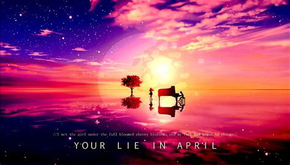

Musical anime:
K-ON! (2009-2010)
Your Lie In April (2014-2015)

Genre: Musical, Slice of Life, Comedy, Drama
K-ON! is about 5 high school girls who become friends through the Light Music Club. Yui the
lead guitarist, Tsumugi the keyboardist, Mio the bassist, Azusa the rhythm guitarist, and Ritsu
the drummer. K-ON is the story of 5 aspiring musicians and their journey through high school
together. I give this anime an 7.6/10 rating. The music and soundtracks are great and there
are some very memorable, wholesome moments between these 5 friends.
Genre: Musical, Tragedy, Slice of Life, Romance, Comedy, Drama
A definite 10/10 rating. Having so many tagged genres, this anime really is a gem. Anyone
who likes/is familiar with classical music will LOVE this anime, because that's what it centers
around. And compared to all the other anime on this list, this anime most definitely has the
best animation and is the prettiest-looking of them all. This anime is about a piano prodigy
who lost his ability to play the piano after suffering a traumatic event in his childhood.
However, years later, he is forced back into the spotlight by an eccentric girl who plays the
violin. That eccentric girl has a very big secret of her own.